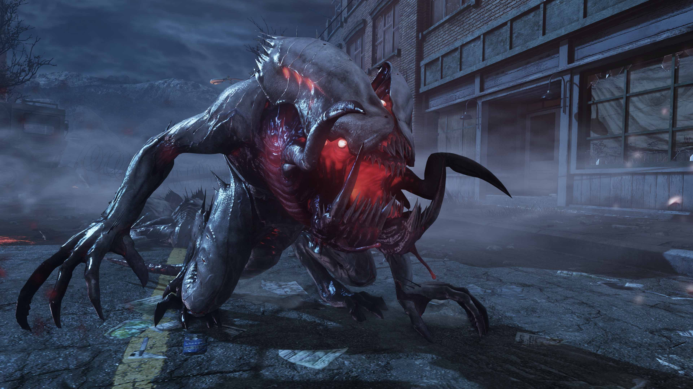
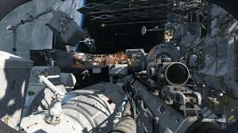

The multiplayer in Call of Duty: Ghosts features changes from that of previous Call of Duty games as some new mechanics have been added to it. Maps now have areas that can be altered or destroyed. On certain maps there is a nuke-like kill streak reward, the KEM Strike. You can get the ODIN kill streak by either getting a certain amount of kills or you can get it by killing the top player on the other team and then completing various challenges after picking up a blue briefcase that is dropped. The sniper rifle scopes also have new "dual render technology" allowing the player to see around the outside of the scope (although blurred) when zoomed in. On October 3, a new multiplayer type was revealed, called Squads. This features a squad that you build and you can face other squads around the world. Your squad can be leveled up and will act like a true individual. "Octane", "Prison Break", "Tremor", "Freight", "Stormfront", "Siege", "Warhawk", "Sovereign", "Overlord", "Flooded", "Strikezone", "Whiteout", "Stonehaven" and "Chasm" are the maps that are in Call of Duty: Ghosts so far. The dynamic map, "Free Fall", was a pre-order bonus. The game now features playable female soldiers. |
|  | Extinction is a new 4-player co-op mode, which pits the player(s) against various types of aliens (known altogether as Cryptids) in a base-defending survival style map. The main goal is usually to destroy all of the Cryptid hives scattered across the map (with the exception of Awakening and Exodus; the former requires players scanning for obelisks in an area which need to be destroyed, while Exodus features generators which the players have to activate). Players choose from four different class types, with unique traits and customizable loadouts. The player(s) can level up their classes, unlocking more weapons and equipment for their loadouts. This mode is unlocked by finishing the first level of the Campaign. |
|  | Call of Duty: Ghosts features a completely new setting, characters, and system, though it is in the same universe. It still features linear sections, but it is said to have "easter eggs" within the game to alter missions slightly. The setting of the game is a war-torn U.S.A. ten years after an ODIN strike, launched via satellite after a hijacking, devastated the landscape and invasion from the Federation, a conglomeration of several South American countries. The single player features a dog companion named Riley, fighting in outer space, a story featuring a team of "Ghosts," who are remnants of elite U.S. Special Forces teams, and various other features. |